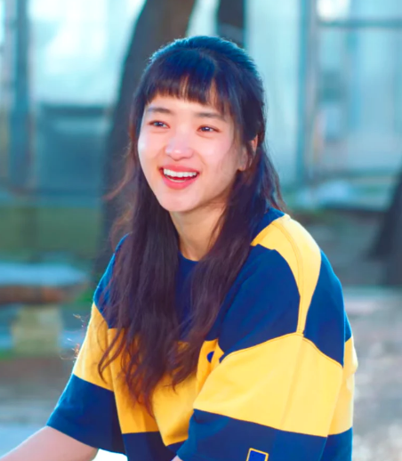
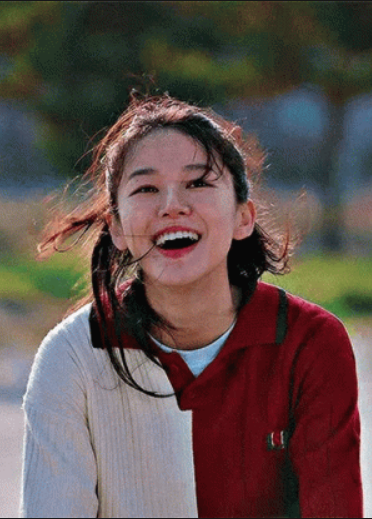

Picture |
Character |
Description |
|  | Na Hee-Do |
A fencing prodigy, who has yet to reach her fullest potential. She idolizes Ko Yu-rim and transfers to her high school specifically to train with her. |
Baek Yi-jin |
A hardworking young man whose chaebol family went bankrupt during the IMF crisis. As such, he moves out on his own in an attempt to rebuild his life despite debt collectors knocking on his door all the time. |
|
Ko Yu-rim |
A high-school fencing gold medalist whom Hee-do idolizes, and her greatest rival. |
|
Moon Ji-woon |
Na Hee-do's classmate and the most popular boy in school. |
|
|  | Ji Seung-wan |
The class president and Moon Ji-woong's childhood friend. She has an anonymous radio talk show in which she raises awareness on the problems of the youth while also giving guidance to fellow students. |